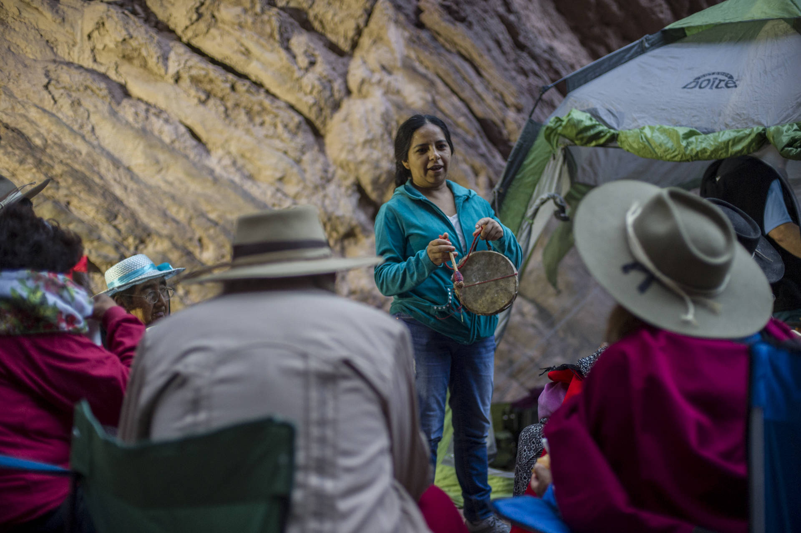
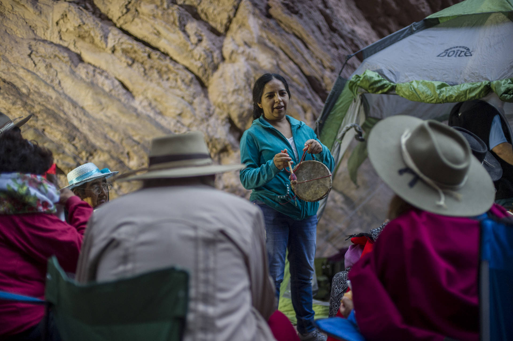

PROYECTO G.R.A.PA
Grupo de Relevamiento Acústico del Patrimonio
Este es un proyecto de relevamiento, registro y promoción del Patrimonio Acústico en relación a las prácticas culturales de distintas regiones de nuestro país.
Proyecto GRAPa está conformado por una serie de trabajos individuales interrelacionados que permiten estudiar y promocionar los distintos espacios:
Relevamientos acústicos en audio 3D
Registros musicales y/o rituales patrimoniales en Realidad Virtual
Fomento de la creación musical para obras específicas de sitio
Serie audiovisual de micro documentales recogiendo el trabajo realizado.
LOS SONIDOS EN EL ESPACIO
El patrimonio Acústico
Nos referimos al Patrimonio Acústico como aquellos lugares que por sus características morfológicas y ambientales involucran la experiencia auditiva como parte inseparable del entorno. Estos aspectos Acústicos varían a lo largo del tiempo como consecuencia del uso, las transformaciones ambientales y la degradación de sus materiales. Por ello vemos necesario retratar dichos espacios a través de estudios acústicos y morfológicos que permitan preservar sus características.
Registramos dichas particularidades sonoras realizando medidas acústicas específicas mediante Respuestas Impulso (disponibles on-line) con micrófonos Ambisonics y fuentes direccionales. Asimismo, buscando explorar las particularidades que cada espacio ofrece a partir de estudios antropológicos de uso y entrevistas a quienes visitan y utilizan constantemente dichos espacios.
REGISTRO AUDIVISUAL DOCUMENTAL
Realizamos una serie documental en el que se recoge la experiencia del trabajo de campo -los distintos estudios acústicos y registros en realidad virtual-. El registro audiovisual muestra cómo la exploración de cada espacio -el estudio de su forma y sonoridad particular en cada caso-, es expuesta y potenciada al experimentarla a través del sonido producido por los intrumentos y voces propios de cada practica musical, en diálogo con el paisaje.
PRACTICAS MUSICALES EN REALIDAD VIRTUAL
Usamos la última tecnología para registrar una serie de Coplas, interpretadas por reconocidas copleras de la comunidad, en realidad virtual. El registro en audio y video inmersivo permite difundir este canto acorde a su práctica y enmarcado en su lugar de origen. De este modo, el espectador tiene una experiencia vivencial más completa al poder situarse en el centro de la ronda. La coplera Mariana Carrizo encuentra una profunda relación entre el canto con caja y estos valles, en cuyos paisajes aprendió a cantar en la niñez. Por ello fue indispensable su aporte a este proyecto.
LOS LUGARES Y LA MÚSICA
Los espacios donde realizar estos registros, más allá de tenerlos en cuenta por sus características acústicas y el paisaje sonoro que los integran -en la mayoría de los casos únicas-, están determinados por varios factores: el significante de uso que tiene y tuvo para la sociedad, su atractivo turístico y cultural y su accesibilidad.
A partir de una exhaustiva investigación, se decidió explorar siete espacios, agrupados en tres regiones de la República Argentina, relacionando cada región con el canto, la música y las expresiones culturales que la integran.
EL CANTO DE LA COPLA
Región Noroeste
Región característica por Valles y Quebradas colindantes a la cordillera de los Andes, cuenta con Áreas Protegidas que formaron parte del antiguo camino del Inka en Argentina. En esta región serán estudiados tres espacios: “El Anfiteatro” en la Quebrada de las Conchas (Salta), Parques provinciales de Ischigualasto y Talampaya (San Juan) y “La quebrada de Humahuaca” en La Puna (Jujuy).
El canto de la Copla es una de las expresiones identitarias de los valles Calchaquíes, practicada por las comunidades Diaguitas desde tiempos ancestrales y transmitida por vía oral. Su forma de ejecución está muy ligada al entorno natural, por lo cual consideramos que es un claro exponente del Patrimonio Acústico y Sonoro de la zona. Como práctica cultural, se expresa de modo ritual en rondas improvisadas donde las cajas y voces se alternan continuamente.
 

EL ANFITEATRO
A menos de 40 kilómetros de la ciudad de Cafayate sobre la ruta Nacional 68, a metros del Río de las Conchas, se encuentra El Anfiteatro. Se trata de una formación rocosa semi-cerrada de forma pseudo-ojival esculpida por la erosión. Su forma particular y el material de sus paredes hacen que el Anfiteatro posea una cualidad acústica excepcional, reconocida en la región y que ha dado inicio, por ejemplo, al ciclo del “Concierto en la Montaña”, realizado anualmente en este espacio desde1991.
Registramos las particularidades sonoras del Anfiteatro realizando medidas acústicas específicas: Respuestas Impulso en Ambisonics y binaurales con fuentes direccionales. Estos registros permiten reconstruir fielmente la acústica del Anfiteatro mediante un sistema de parlantes o auriculares. Además de preservar el sonido del Anfiteatro como Patrimonio Acústico, pueden ser utilizados como reverberadores digitales en registros de cine y realidad virtual.
LA MÚSICA ARAUCANA
Región Cuyo | Patagónica
Regiones áridas y de estepas, tanto el Cuyo como la Patagonia, se reconocen por sus climas fríos y secos. De esta zonas se decidió trabajar con formaciones cavernarias cuyos atributos acústicos se distinguen de otros espacios en Argentina. En particular serán estudiadas dos formaciones cavernarias significativas de cada región: la “Caverna de las Brujas” en el Departamento de Malargüe (Mendoza) y la “Caverna de las Manos” en el Cañadón del Río Pinturas (Santa Cruz).
Estas regiones fueron habitadas por culturas Huarpe y Mapuche, quienes manifestaban una variedad de cantos y músicas recreativas y ligadas a sus creencias. Predominan en ambos casos el canto chamánico y el tambor como elemento identitario. Del mismo modo, las tribus pre-tehuelches (Aoni-Kenk) mucho más relacionados al Cañadón del Río Pinturas, además del canto, poseen un grupo de instrumentos como el koolo (cordófono hecho con una costilla de guanaco y cerdas de caballo), el Rambo (aerófono hecho de un fémur de guanaco) y percusivos como el Aple, El Chelper y el sonajero.
LA MÚSICA QOM
Región Noreste
De esta región se propone estudiar dos Parques Nacionales conocido como: “El Impenetrable” (Chaco) e “Iguazú” (Misiones), ambos se caracterizan por su fauna y flora, donde pueden encontrarse cientos de especies hoy consideradas en vías de extinción. De este modo, sus Áreas Protegidas gozan de un paisaje sonoro único en Argentina.
Culturalmente, estos espacios fueron habitados por comunidades entre las que se destacan los Guaycurúes, conocidos como Qom. Sus prácticas musicales se expresan en convivencia con el paisaje sonoro que le da origen. Se destacan por cantos colectivos y solistas acompañados por instrumentos como el “n’viqué” (especie de violín de una sola cuerda) e instrumentos percusivos como vainas de algarrobos, pezuñas, maracas y sonajeros de calabazas como el “cartexetẽ”.
SOBRE G.R.A.PA
G.R.A.Pa. se formó en el año 2017 en base a una cooperación entre la Universidad Nacional de Quilmes (UNQ) y la Universidad Católica de Salta (UCaSal) con el objetivo de realizar un relevamiento de la acústica del Anfiteatro Natural de la Quebrada de las Conchas. En el 2018 ampliamos los objetivos del proyecto al relacionarlo con el canto de la Copla a partir del entorno sonoro propio de sus orígenes. Contamos también con la participación activa de la coplera salteña Mariana Carrizo, artista comprometida en la lucha por la preservación y revalorización de este canto ancestral. A partir de allí, iniciamos un proyecto de investigación y producción de contenidos inmersivos en los cuales la relación entre las músicas nativas y sus entornos acústicos naturales se exprese con claridad. Nuestra finalidad es documentar el Patrimonio Acústico, que entendemos abarca tanto la música en sí misma como el entorno acústico en el que es creada.
Francisco Durante es Licenciado en Música y Tecnología (UNQ) y Maestro Mayor de Obras dedicado a la investigación, diseño y construcción con materiales naturales y permacultura. Trabaja como compositor en diferentes proyectos artísticos multidisciplinarios en donde se vinculan las músicas tradicionales con nuevas tecnologías y el espacio.
Damian Payo es Licenciado en Música y Tecnología (UNQ), actualmente se desempeña como docente e investigador en la Universidad Católica de Salta en la ciudad de Salta Capital desde donde ha profundizado en el estudio de Acústica de Salas no convencionales y organizado Jornadas y Seminarios abocados al área de la Acústica y el Audio Digital.
Manuel Eguia es Doctor en Física (UBA) e investigador de CONICET y UNQ, donde dirige el Laboratorio de Acústica y Percepción Sonora (LAPSo), grupo donde ha realizado numerosos trabajos de investigación sobre percepción espacial auditiva y dispositivos que modifican el campo sonoro con medios puramente acústicos.
Mauro Zannoli es Licenciado en Composición con Medios Electroacústicos (UNQ), compositor, programador y diseñador sonoro. En su trabajo tiene un fuerte interés en la utilización del espacio como un parámetro más del sonido tanto en música como en el arte sonoro. Ha montado sistemas Ambisonics en varios teatros para obras específicas.